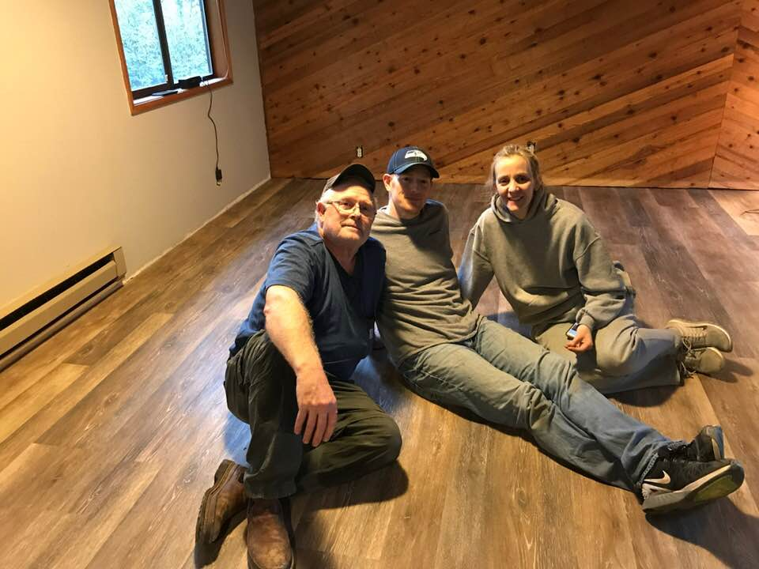

Her story
Sidnee was raised in Hockinson WA, and lived for a few years in a few states, including Idaho, Connecticut, and Utah. She married her high school sweetheart in 1999, and had her first two children in 2001, twin girls. For the next 16 years she spent time raising her family, making some extra cash cutting peoples hair in the laundry room of her house.
Sidee has always been very social and interested in learning about peoples lives. She has always love the hunt for the house. Once all her babies grew up to be teenagers she had to spend her time doing something other than waiting on them like a maid, so she looked into getting her real estate liscence.
Expirience
Sidnee has been a Real Estate Agent in the Southwest Washington area for over 5 years and counting. Sidnee and her husband Daniel buy properties in need of repair every few years and fix it up and use it as a rental property. In 2017 They bought a property in Long Beach, Washington and spent many weekends out there on their hands and knees replacing floors and other improvements with their children and parents and friends. Sidnee started out with Reality Pro, Then sold some new Manufactured homes for Holt Homes in camas for a few years. Now she is working with Moor Reality.